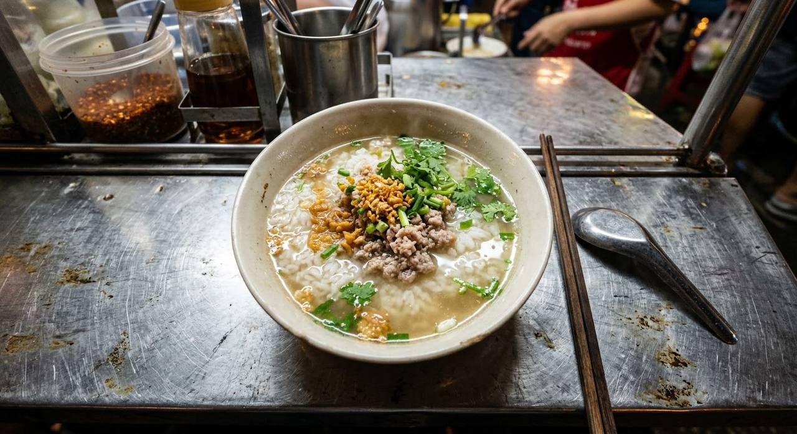

Rice bloomed in a garlic-and-coriander-root stock, crowned with seasoned pork and crisp fried garlic. Thailand's gentle breakfast — the bowl that sits next to the omelette.

ข้าวต้ม means "boiled rice" — and that is the whole architecture. Not raw rice simmered from dry (that's congee, ข้าวต้มเครื่อง of the old stalls), but cooked rice returned to a savoury stock and boiled until the grains bloom open like petals and the broth goes softly cloudy with rice starch. One of Pim's home-kitchen notes puts it best: the longer you simmer, the closer you get to the ข้าวต้มเครื่องโบราณ — the old-style porridge with the cloudy, starchy water.
It is the second half of the classic Thai breakfast set: khao tom and khai jiao — a soft rice soup and a crisp-edged omelette, ordered together at every khao tom shop from Bangkok to the provinces. The source recipes read as a study in gentleness: a stock of the three friends (garlic, peppercorn, coriander root), pork seasoned lightly and fried until fragrant, and — the signature — กระเทียมเจียว, garlic fried to gold, scattered over the top so its oil perfumes the whole bowl.
The meat is a moving part. The classic is minced pork; the Kapook ทรงเครื่อง version adds dried shrimp fried with the pork; Pim's household version goes the other way with fresh shrimp and pork chopped coarse, stir-fried in the garlic's own oil and spooned over as a topping. All three keep the same bones: rice, stock, garlic.
| Thai | English | Amount |
|---|---|---|
| ข้าวสวย | Cooked jasmine rice | 3–4 ladles (~2 cups) |
| น้ำเปล่า | Water | 2 L |
| กระเทียมสับ | Garlic, chopped (for the fried garlic) | 3 tbsp |
| กระเทียม พริกไทย รากผักชี | Garlic, peppercorns and coriander roots (the stock's three friends) | 1 set |
| ตั้งฉ่าย | Preserved mustard green (optional) | 1 tbsp |
| ซีอิ๊วขาว | White soy | 2 tbsp |
| น้ำมันหอย | Oyster sauce | 1 tbsp |
| หมูสับ (ปรุงรสด้วยซีอิ๊วขาว น้ำมันหอย น้ำตาล พริกไทย) | Minced pork (seasoned with white soy, oyster sauce, sugar, pepper) | 200–300 g |
| น้ำตาลทราย | Sugar (in the pork seasoning) | 1 tsp |
| กุ้งแห้ง | Dried shrimp | 2 tbsp |
| ต้นหอม ผักชี | Spring onions and coriander, to finish | as you like |
Stock or plain water. Pim simmers the rice in real pork-bone stock with bruised galangal; Kapook builds a quick water stock on garlic, peppercorn and coriander root with white soy and oyster sauce. Both work — the pork-stock version is the deeper, slower breakfast.
The meat. Plain minced pork (TrueID), pork fried with dried shrimp (Kapook), or a fresh shrimp-and-pork topping fried in the garlic oil (Pim). Three sources, three proteins — the rice and garlic never move.
Preserved mustard green. Kapook's ตั้งฉ่าย is optional even in its own recipe — a salty, fermented depth note that some bowls want and others skip.
How porridge-y. Pim is explicit: simmer briefly for a light soup, or long and slow for the ข้าวต้มเครื่องโบราณ texture with thick, starchy water. The bowl's thickness is the cook's call.
Galangal. Pim puts bruised galangal in the rice stock; the Kapook and TrueID versions don't mention it. It's the difference between a stock built from bones and one built from aromatics.
This recipe is translated from the following Thai-language sources. Where they disagree, we've said so.
1. Kapook (ครัวแม่ผึ้ง) — "ข้าวต้มหมูสับทรงเครื่อง สูตรใส่กุ้งแห้ง อาหารเช้าง่าย ๆ อร่อยล้นชาม" (the dried-shrimp version used here, 197K reads) — cooking.kapook.com
2. Pim @ ครัวบ้านพิม — "ข้าวต้มกุ้งสับ" (pork-bone stock, galangal, shrimp-and-pork topping, 233K hits) — pim.in.th
3. TrueID — "แจกสูตรเมนูทำง่าย ข้าวต้มหมูสับ น้ำซุปหอม ข้าวต้มนุ่ม หอมกลิ่นกระเทียมเจียว" (the plain minced-pork home version) — food.trueid.net
4. Krua.co — "ข้าวต้มเหลืองเมืองตาก" (Tak province's curry-powder rice porridge with fried wonton — the regional variant, for context) — krua.co